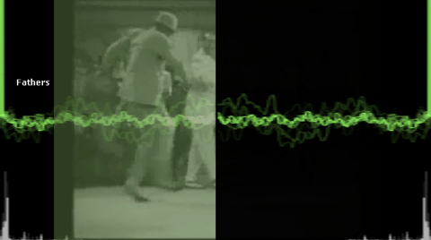
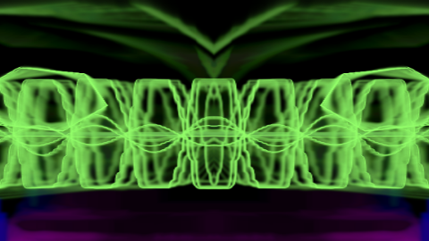
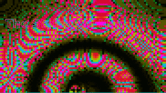
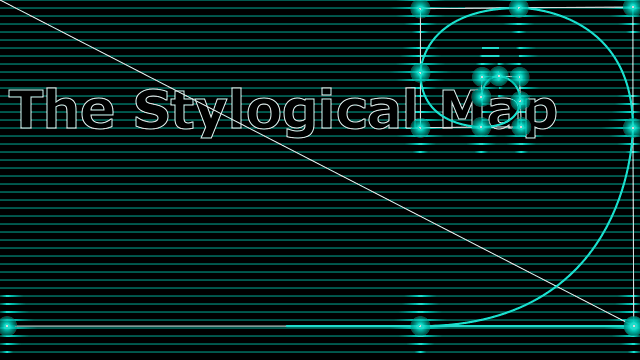
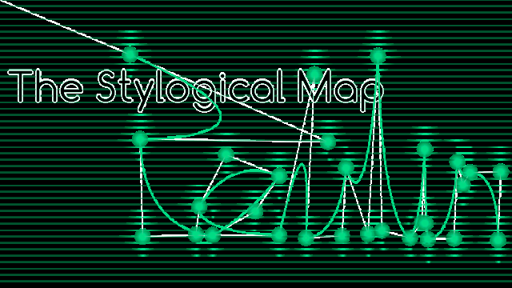
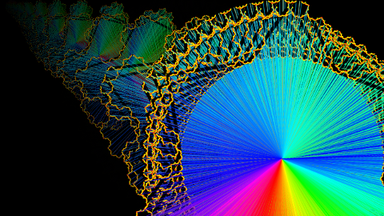
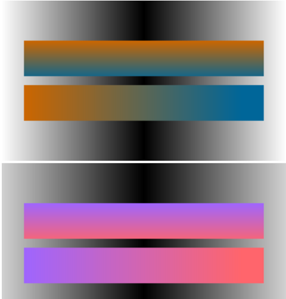

JS Demos
Play
These are some very loosely organized experiments, for the purpose of improving my understanding.
Here’s an equally loose index of what can be viewed online:
WebGL Video Cube (Projection of HTML5 video onto a WebGL Cube with deformed normals)

Visualizer (+VIDEO) (Exploration of music visualization, adding real-time compositing of HTML5 video)FFT Simple (first try at music visualization using pre-analyzed fft data)
FFT More (continues exploration of music visualization using pre-analyzed fft data)

Visualizer (+input) (continues exploration of music visualization, adding mouse interaction)Stylogical Maps (these demos were my first efforts with HTML5 Canvas, initially using the Processing.js API. Later demos in the series use direct calls to the Canvas API)




Koch Snowflake (expansion of example from ‘Canvas Pocket Reference’ by D. Flanagan, 2011)
Gradient (Gradient example converted to Canvas API from Processing API )MOV16 (output shows up in console; an emulation of an assembly MOV opperation on a 16-bit microprocessor)
Range2 Class (based on example from ‘JavaScript Pocket Reference’ by D. Flanagan, 2012)
Try ‘this’ (comparing use of ‘this’ v.s. vars within methods; partially based on code from ‘JavaScript Enlightenment’ by C. Lindley, 2012)
Fathers

These demos by John are licensed under the Creative Commons Attribution-ShareAlike 3.0 License, 2009-2026